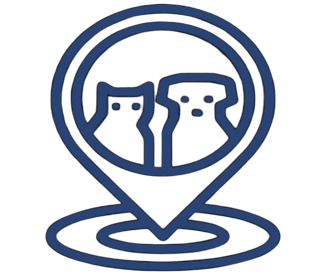
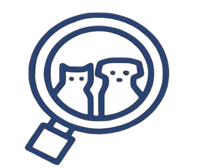

<nav class="bottom-nav">
  <a routerLink="/inicio" routerLinkActive="active" class="nav-item">
    
  </a>
  <a routerLink="/animales-perdidos" routerLinkActive="active" class="nav-item">
     
  </a>
  <a routerLink="/animales-encontrados" routerLinkActive="active" class="nav-item">
    
  </a>
  <a routerLink="/notificaciones" routerLinkActive="active" class="nav-item">
    <i class="pi pi-bell"></i>
  </a>
  <a routerLink="/perfil" routerLinkActive="active" class="nav-item">
    <i class="pi pi-user"></i>
  </a>
</nav>
